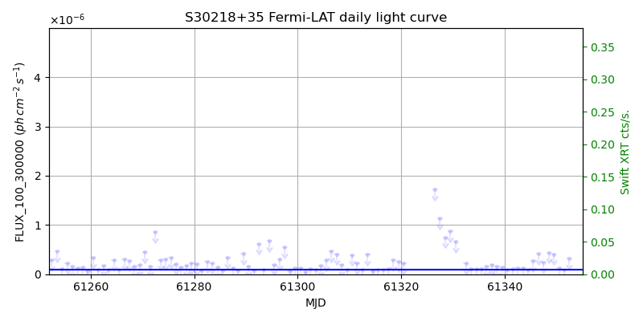
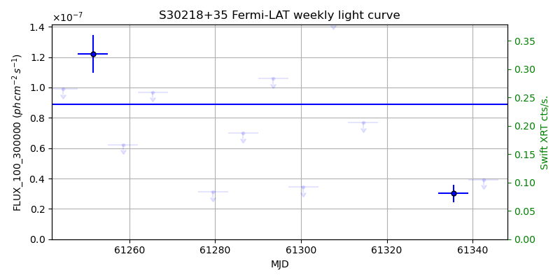
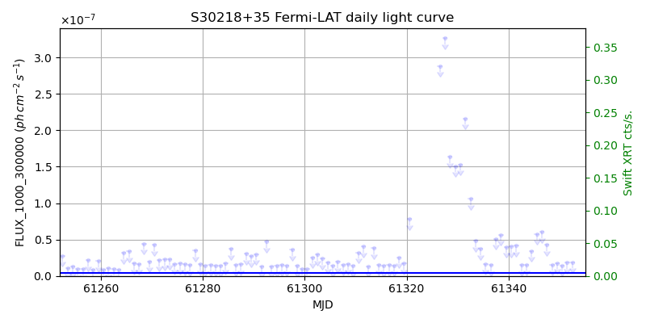
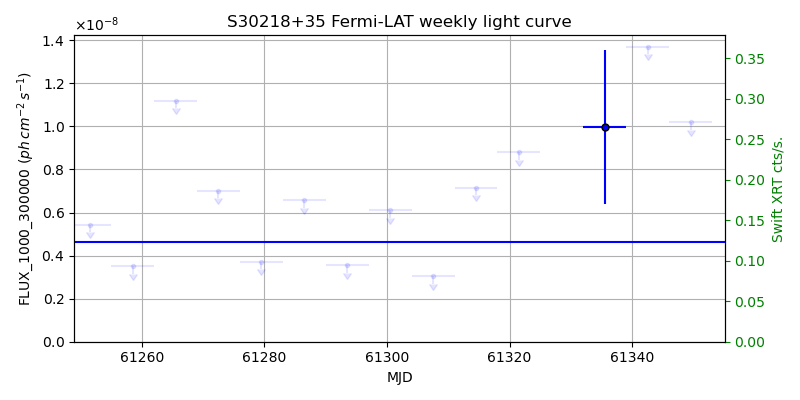

LAT Lightcurve site: https://fermi.gsfc.nasa.gov/ssc/data/access/lat/msl_lc/source/S3_0218p35
Swift site: https://www.swift.psu.edu/monitoring/source.php?source=S30218+35
NED: Query
Time of last update of this page: UT: 2026-11-13 16:12 (MJD: 61357.675)
| Property | Value |
|---|---|
| R.A. | 2:21:05.52 |
| Dec. | 35:56:13.2 |
| z | 0.944 |
| 3FGL SpectrumType | PowerLaw |
| 3FGL PL Index | 2.28 |
| 3FGL Flux_100_300000 | 8.90e-08 1 / (s cm2) |
| 3FGL Flux_1000_300000 | 4.65e-09 1 / (s cm2) |
| 3FGL Flux >200 GeV | 5.21e-12 1 / (s cm2) |
| 3FGL Extrap. Crab >200 GeV | 0.02 |
| 3FGL Flux After EBL Absorption >200GeV | 9.60e-14 1 / (s cm2) |
| 3FGL EBL Crab Fraction >200GeV | 0.00 |

| MJD | dMJD | Flux | dFlux | Frac3FGL | FracCrab>200GeV | EBLFracCrab>200GeV |
|---|---|---|---|---|---|---|
| 61348.50 | 0.50 | 4.40e-07 | 0.00e+00 | 0.00 | 0.00 | 0.00 |
| 61349.50 | 0.50 | 4.09e-07 | 0.00e+00 | 0.00 | 0.00 | 0.00 |
| 61350.50 | 0.50 | 1.21e-07 | 0.00e+00 | 0.00 | 0.00 | 0.00 |
| 61351.50 | 0.50 | 9.57e-08 | 0.00e+00 | 0.00 | 0.00 | 0.00 |
| 61352.50 | 0.50 | 3.16e-07 | 0.00e+00 | 0.00 | 0.00 | 0.00 |

| MJD | dMJD | Flux | dFlux | Frac3FGL | FracCrab>200GeV | EBLFracCrab>200GeV |
|---|---|---|---|---|---|---|
| 61321.50 | 3.50 | 1.67e-07 | 0.00e+00 | 0.00 | 0.00 | 0.00 |
| 61328.50 | 3.50 | 3.20e-07 | 0.00e+00 | 0.00 | 0.00 | 0.00 |
| 61335.50 | 3.50 | 3.02e-08 | 5.72e-09 | 0.34 | 0.01 | 0.00 |
| 61342.50 | 3.50 | 3.92e-08 | 0.00e+00 | 0.00 | 0.00 | 0.00 |
| 61349.50 | 3.50 | 1.19e-07 | 0.00e+00 | 0.00 | 0.00 | 0.00 |

| MJD | dMJD | Flux | dFlux | Frac3FGL | FracCrab>200GeV | EBLFracCrab>200GeV |
|---|---|---|---|---|---|---|
| 61348.50 | 0.50 | 1.57e-08 | 0.00e+00 | 0.00 | 0.00 | 0.00 |
| 61349.50 | 0.50 | 1.77e-08 | 0.00e+00 | 0.00 | 0.00 | 0.00 |
| 61350.50 | 0.50 | 1.45e-08 | 0.00e+00 | 0.00 | 0.00 | 0.00 |
| 61351.50 | 0.50 | 1.82e-08 | 0.00e+00 | 0.00 | 0.00 | 0.00 |
| 61352.50 | 0.50 | 1.90e-08 | 0.00e+00 | 0.00 | 0.00 | 0.00 |

| MJD | dMJD | Flux | dFlux | Frac3FGL | FracCrab>200GeV | EBLFracCrab>200GeV |
|---|---|---|---|---|---|---|
| 61321.50 | 3.50 | 8.81e-09 | 0.00e+00 | 0.00 | 0.00 | 0.00 |
| 61328.50 | 3.50 | 3.08e-08 | 0.00e+00 | 0.00 | 0.00 | 0.00 |
| 61335.50 | 3.50 | 9.98e-09 | 3.58e-09 | 2.15 | 0.05 | 0.00 |
| 61342.50 | 3.50 | 1.37e-08 | 0.00e+00 | 0.00 | 0.00 | 0.00 |
| 61349.50 | 3.50 | 1.02e-08 | 0.00e+00 | 0.00 | 0.00 | 0.00 |
--------------------------------------------------------- Using user-supplied coords: 2:21:05.52 35:56:13.2 2000 --------------------------------------------------------- FLWO UT night of: 2026-11-14 Local Sid. @ Midnight: 03:09 Sunset (-15.0) (local, UT): 18:35 01:35 Sunrise (-15.0) (local, UT): 05:42 12:42 Moonrise (local, UT): Moonset (local, UT): 20:50 03:50 Moon phase: 0.22 --------------------------------------------------------- AzTime LSID UT Obj_el Obj_az Mn_el Mn_az Sep. --------------------------------------------------------- 18:35 21:44 01:35 33.3 65.0 20.1 218.2 120.9 19:05 22:14 02:05 39.1 67.0 16.0 223.7 120.8 19:35 22:44 02:35 45.0 68.8 11.6 228.6 120.6 20:05 23:14 03:05 51.0 70.3 6.9 233.2 120.4 20:35 23:44 03:35 57.1 71.3 2.0 237.3 120.1 21:05 00:14 04:05 63.1 71.8 -2.2 241.2 119.9 21:35 00:44 04:35 69.2 71.1 -9.0 244.8 119.7 22:05 01:14 05:05 75.2 68.1 -14.6 248.2 119.4 22:35 01:44 05:35 81.0 58.4 -20.4 251.4 119.2 23:05 02:14 06:05 85.3 20.1 -26.2 254.5 118.9 23:35 02:44 06:35 83.7 315.2 -32.1 257.5 118.6 00:05 03:14 07:05 78.3 295.6 -38.1 260.6 118.3 00:35 03:45 07:35 72.4 290.0 -44.2 263.8 118.0 01:05 04:15 08:05 66.4 288.4 -50.2 267.1 117.7 01:35 04:45 08:35 60.3 288.3 -56.3 270.9 117.4 02:05 05:15 09:05 54.2 289.1 -62.4 275.3 117.1 02:35 05:45 09:35 48.2 290.3 -68.4 281.1 116.8 03:05 06:15 10:05 42.2 292.0 -74.2 289.9 116.4 03:35 06:45 10:35 36.3 293.9 -79.6 306.2 116.1 04:05 07:15 11:05 30.5 296.1 -83.2 343.5 115.8 04:35 07:45 11:35 24.9 298.5 -82.1 35.1 115.5 05:05 08:15 12:05 19.3 301.1 -77.4 61.2 115.2 05:35 08:45 12:35 13.9 304.1 -71.8 73.4 114.9 05:42 08:52 12:42 12.8 304.7 -70.5 75.2 114.8 --------------------------------------------------------- Dark hours >55 deg.: 5.19 srcstart (UT): 2026-11-14 03:50 srcend (UT): 2026-11-14 09:01